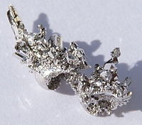

Numero atomico: 46
Massa atomica: 106,4
Temperatura di fusione (°C): 1553
Temperatura di ebollizione (°C): 2963
Energia di prima ionizzazione (kj/mol): 805
Elettronegatività (secondo Pauling): 2.20
Densità: 12
Numeri di ossidazione: +2 +4
Configurazione elettronica: 1s2, 2s2, 2p6, 3s2, 3p6, 3d10, 4s2, 4p6, 4d10
Maggiori Informazioni